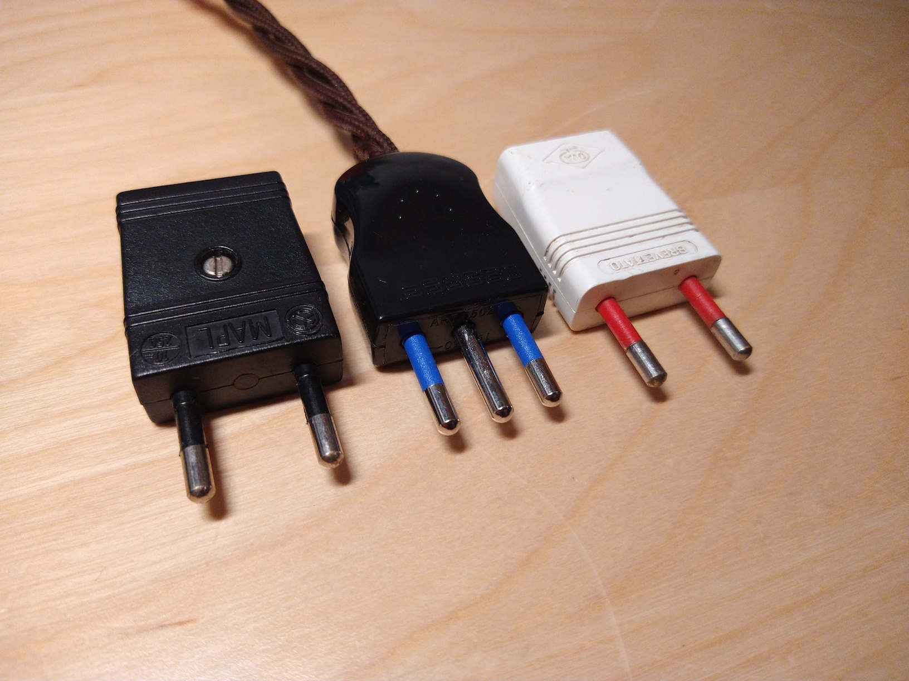
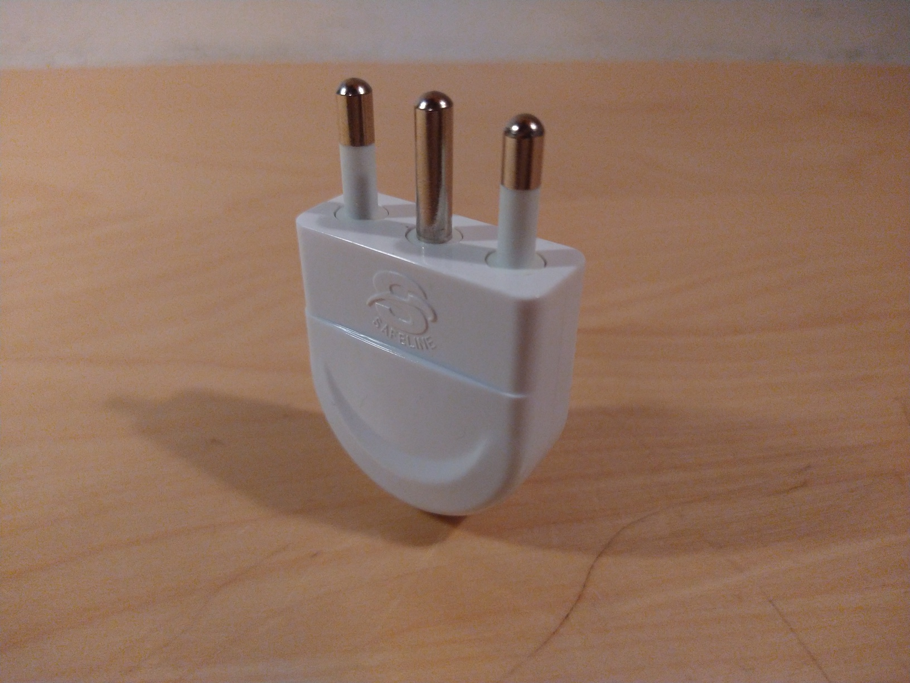
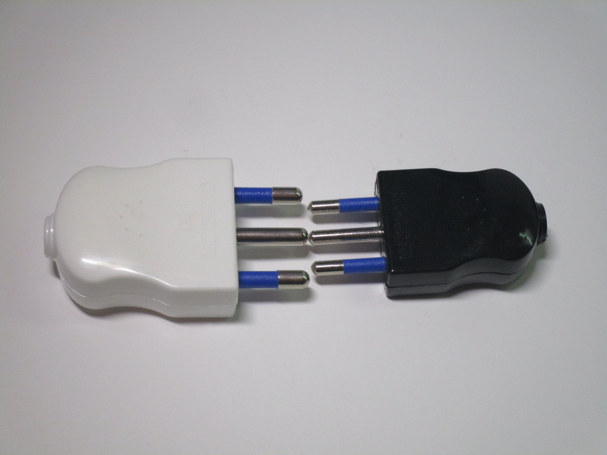
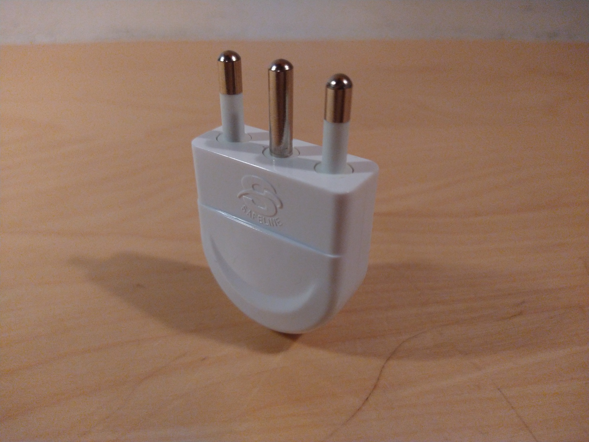
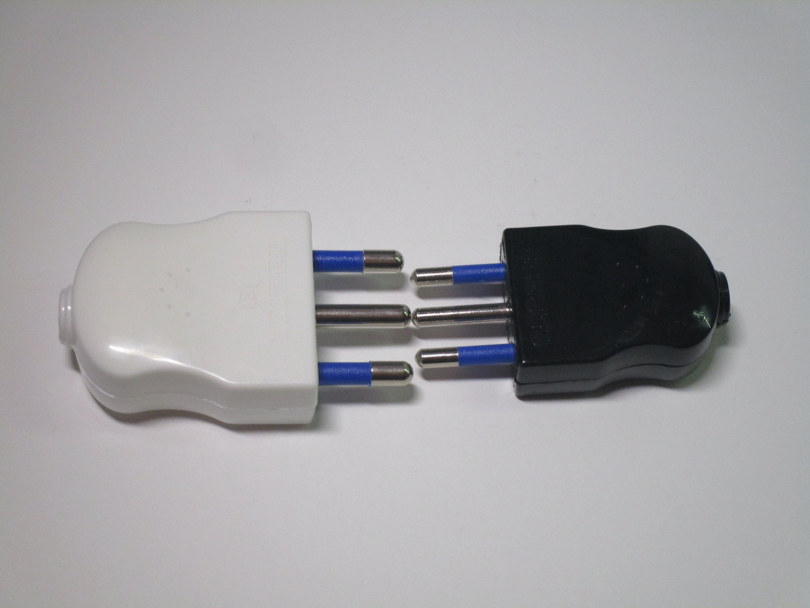
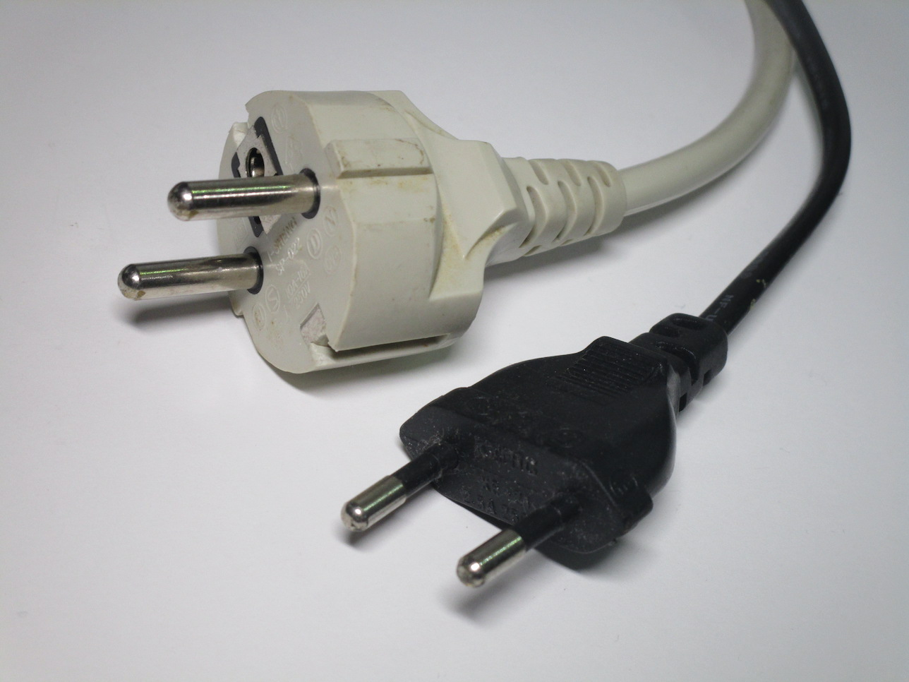
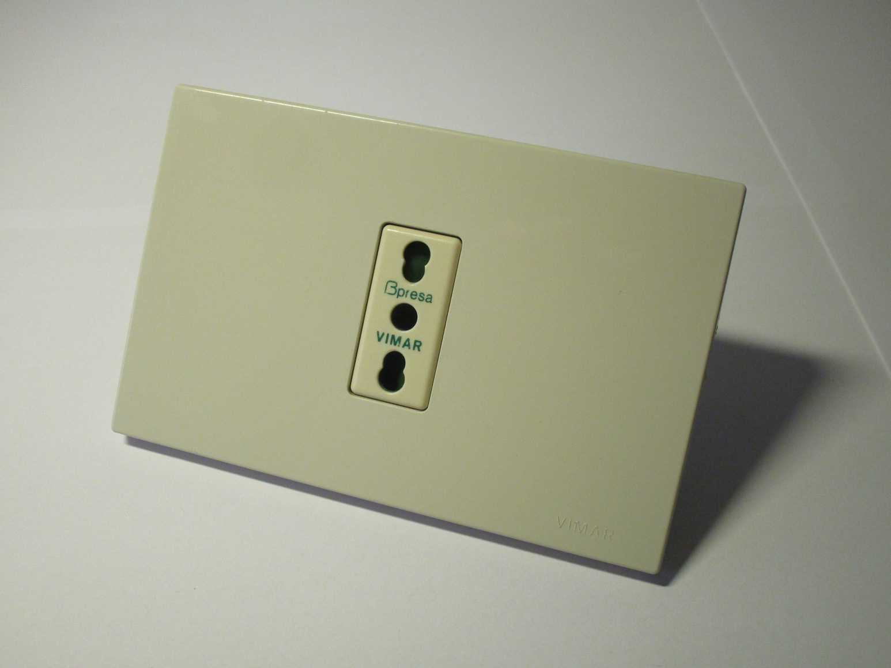
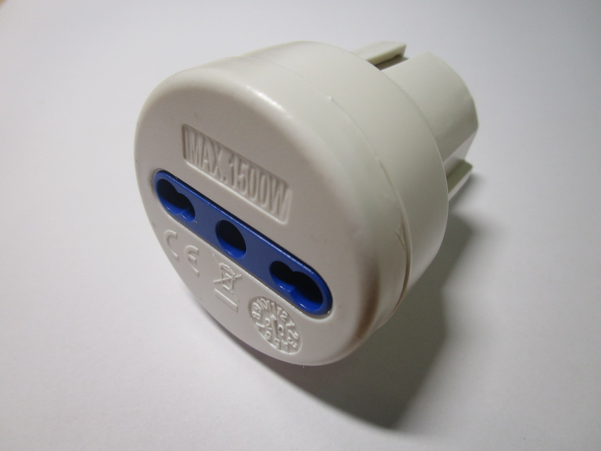
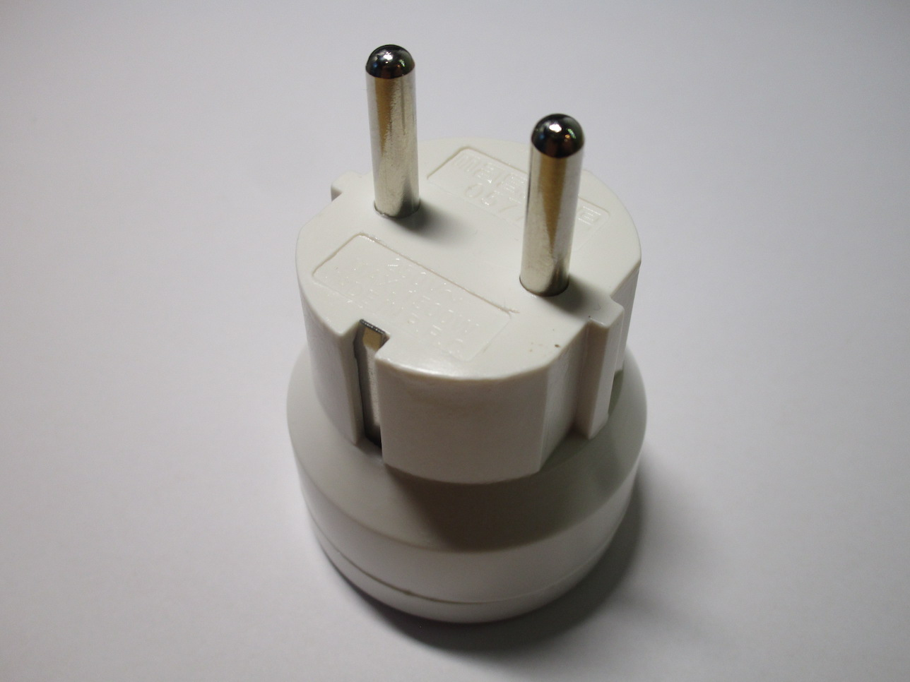

Modern electrical stuff
Types of plugs
 As mentioned in the introductory page, Italy uses a few different types of plugs. The original type L plugs are still in use, but in addition to them the Schuko plugs, as used in the rest of Europe, have also become widely adopted. However, most sockets still only accept Italian plugs, leading many to use adaptors. Thankfully, Schuko-compatible sockets are starting to be installed increasingly more in new or recently renovated houses.
Type L plugs
Type L plugs are the original Italian plugs. There are two types, a 10A one and a 16A one, which have different
pin sizes and spacing - this was on purpose as originally they were designed to be used with different volages
(you can read about that in greater detail in the history section).
The use of this type of plug on appliances has diminished considerably, and instead you will generally see them
used on power strips and extension cords - in fact that's the only thing the 16A plugs are used for nowadays.
There are still some devices that ship with 10A type L plugs, however, often on things like laptop chargers.
 



{kind=link}
{kind=link}
Despite most things not coming with Italian plugs anymore, they are always the type used when rewiring an appliance, as they're compatible with the more common types of sockets. They're also the default on power strips, for the same reason, however the power strips themselves generally accept both Italian and Schuko plugs.
Unusual type L plugs
Most type L plugs are built with the pins facing the same direction as the body of the plug, and with the cord coming out from the back. However, there are a few different styles easily available, which can be very useful when space is limited.
One such example is this one, made by Vimar, which can be set up with the pins facing one of two
directions: either with the pins at a 90 degree angle, or straight on.
Notably, when set up with the pins at a 90 degree angle, the plug cannot fit inside a Schuko-compatible socket.
Given that they're becoming more and more popular, it seems strange that Vimar sells this plug with that as
the default orientation.
{kind=link}
{kind=link}
Schuko plugs and Europlugs
 However, by far the most common types of plugs that come on devices today are the Europlugs and Schuko plugs, the same used in most other European countries. Europlugs aren't a problem, as they were designed to be compatible with most sockets around Europe including the Italian ones (and they often have a similar external appearance to the (nowadays uncommon) non-earthed 10A type L plugs). However, they're only useful for low-power non-earthed devices.
Schuko plugs on the other hand are what you'll find on most appliances, as it means that the manufacturers can
sell them everywhere in Europe, however as you'll see later most sockets aren't compatible with them, leading
many to use adaptors.
Because of this you'll also generally not see rewireable Schuko plugs used in Italy, although they are generally
available at hardware stores if needed.
Household power sockets

Standard type L sockets, the most common type in use here, are available, as with the plugs, in two sizes.
The 10A versions are thankfully not as common, as they prevent you from using a 16A plug for no real
reason (since nowadays they'd be connected to the same type of circuit anyways).
The bigger 16A sockets, on the other hand, are what's generally used.
These are generally referred to as "Bipasso", a trademark name from Vimar, as, compared to the old ones seen
in the vintage sockets section, these are capable of accepting both
sizes of type L plug.
{kind=link}
{kind=link}
Italian-style Schuko sockets
Because Schuko plugs have become so common, sockets which can accept both standards also exist, and are
being installed in newer installations.
Compared to a normal Schuko socket they have a smaller recess and have a wider opening, to allow users to connect
both 10A and 16A type L sockets. This does mean that the socket doesn't support Schuko plugs as well as the
"real" ones, but it's not a bad tradeoff.
{kind=link}

Unfortunately, adoption of these sockets has been fairly slow until recently, as Schuko sockets occupy twice the module space as the standard type L ones, leaving less room inside a normal wall box.
A weird solution: the 4box Side
To solve this problem a new style of socket has been created by the company 4box.
These are designed to accept either two type L plugs or one Schuko one, thus allowing essentially the best of
both worlds.
However, because of how new they are, they are still extremely uncommon around Italy, seeing use in only a fraction
of brand new installations.
Adaptors
Schuko adaptors
Adaptors like these allow people to connect Schuko appliances to standard Italian type L sockets, as found in most houses. Power strips with sockets that accept both types of standard are also available, and are generally the main type of power strips you'll see being sold nowadays.
These devices are always rated for 1500W maximum, although they're often also used for things like washing machines and hairdryers.


Additionally, adaptors that do the opposite thing also exist, they are less common but they're useful to connect type L plugs to "normal" Schuko sockets. Notably, this adaptor is only compatible with the German-style sockets, as it lacks the earth hole to work with the French ones.
 {kind=link}
{kind=link}
Type L to Type L adaptors
Since older houses had less sockets, and those sockets often weren't of the right type, adaptors like these,
which convert between the two different kinds of type L plugs, were (and still are) used quite a lot.
I've also seen these used with Schuko plugs jammed into them, which is very unsafe and can break the adaptor.
You can see very clearly, in the second picture, that the earth pin on that adaptor has been cut off.
This was because many older sockets didn't have an earth hole, so any plugs with an earth pin, like these
adaptors, wouldn't fit.
The use of these adaptors has largely become unnecessary as most houses built in the last few decades come with Bipasso sockets.